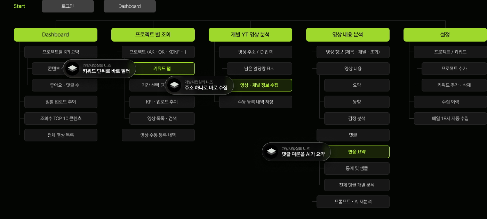
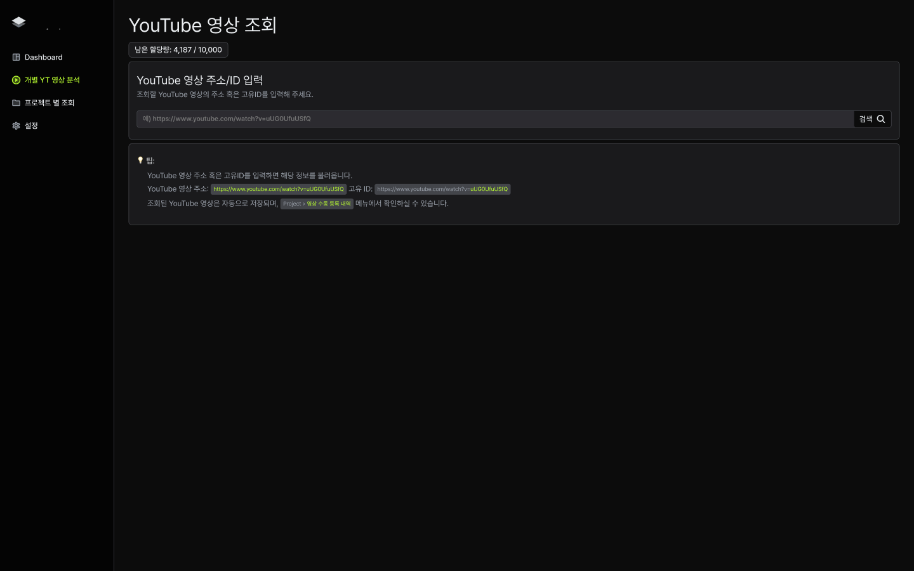
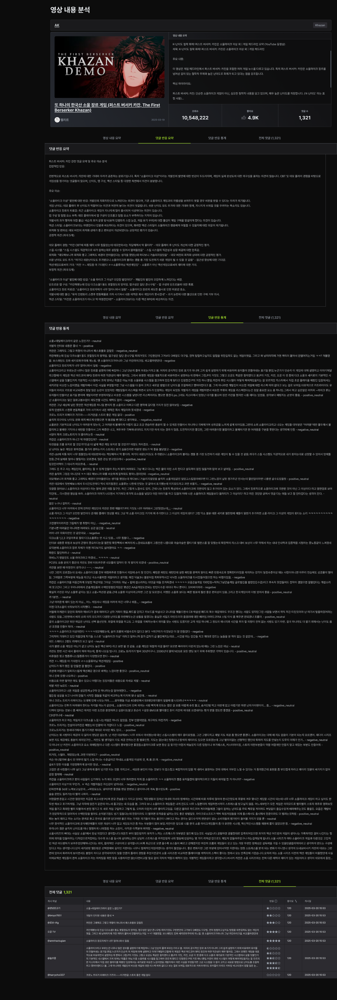

미디어 인사이트


프로젝트의 버즈를 매일 자동으로 모아
생성형 AI로 읽는 애널리틱스
프로젝트별 영상 반응을 확인하기 위해 YouTube를 직접 검색하고 엑셀로 정리해 왔습니다.
수집 기준이 그때그때 달랐고, 영상 내용과 댓글 여론은 하나하나 봐야만 알 수 있었습니다.
그래서 키워드만 등록하면 매일 자동으로 수집되고,
생성형 AI가 영상과 댓글을 요약해 주는 별도 웹 서비스로 신규 구축했습니다.
내가 사용자라면 어떤 화면이 편할까
기존 YouTube 영상 집계 대시보드를 참고하고, 사용자 입장에서 어떤 방향이 편리할지 고민하며 세 가지 기준을 세웠습니다.
무엇을 먼저 보고 싶은지, 어디서 막히는지를 기준으로
화면 순서를 정했습니다.
이미 익숙한 KPI 카드 · 추이 차트 구조를 가져와
학습 비용을 줄였습니다.
그래프와 영상 썸네일이 배경보다 먼저 보이도록
다크 모드를 적용했습니다.
Information Architecture
Dashboard에서 전체 현황을 보고, 프로젝트별 조회에서 키워드 단위로 좁혀 들어가며, 개별 영상 분석에서 AI 요약과 댓글 반응까지 확인하는 흐름으로 정보 구조를 설계했습니다.

실제 서비스 구조를 기반으로 작성했으며, 프로젝트명은 서비스 내 표기를 따랐습니다.
프로젝트별 버즈 현황을
한 화면에서 비교
WHAT · SOLUTION
- 01KPI 요약
콘텐츠·조회·좋아요·댓글 수를 카드로 요약했습니다.
- 02업로드 추이
키워드별 일별 업로드 추이를 누적 차트로 보여줍니다.
- 03TOP 콘텐츠
조회수 상위 영상을 카드로 바로 확인합니다.

키워드로 좁혀 보는
프로젝트별 콘텐츠
WHAT · SOLUTION
- 01키워드 탭
키워드 탭으로 영상 목록을 한 번에 전환합니다.
- 02기간 · 검색
기간과 제목·채널명으로 필요한 영상만 찾습니다.
- 03키워드 추가
+ 버튼으로 수집할 키워드를 바로 추가합니다.

주소 하나로 영상을 수집하고
생성형 AI로 내용까지 분석
WHAT · SOLUTION
- 01영상 조회
주소나 ID만으로 영상 정보를 불러오고 자동 저장합니다.
- 02AI 요약
AI가 요약·주제·타임스탬프를 정리합니다.
- 03남은 할당량
하루 조회 가능한 API 할당량을 상단에 표시했습니다.

댓글 여론을
긍정 · 부정으로 읽어 내기
WHAT · SOLUTION
- 01반응 요약
댓글 동향과 긍정·부정 주제를 AI가 요약합니다.
- 02통계 및 샘플
긍정·부정 비율과 대표 댓글로 근거를 보여줍니다.
- 03개별 분석
댓글마다 분석·프롬프트 버튼으로 깊이 들여다봅니다.



BlackRGB 11/11/11 Hex 0B0B0B
LimeRGB 186/255/48 Hex BAFF30
Dark GrayRGB 28/28/30 Hex 1C1C1E
WhiteRGB 255/255/255 Hex FFFFFF
Pretendard
Aa123
Media Insight,
Collect Widely
Analyze Deeply
See Clearly
ABCDEFGHIJKLMNOPQ
RSTUVWXYZ
abcdefghijklmnopqrst
uvwxyz / 1234567890.:?!
@*&%?